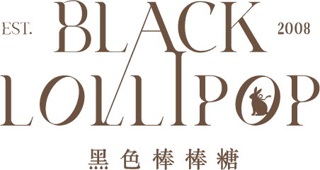

囍餅與彌月
已有明確的送禮用途與商品分類，可以延伸新人、家長會比較的選購問題。

給黑色棒棒糖的一個新客提案
從 AI 搜尋與真實食品案例，
看看禮盒被找到的另一種可能。
瑪卡鎷網路行銷
從你們已經在做的生意開始
官網有囍餅、彌月與中秋禮盒；購物須知也已提供公司行號大量採購的聯繫方式。
已有明確的送禮用途與商品分類，可以延伸新人、家長會比較的選購問題。
現有禮盒與商品攝影，可以接到「送誰、怎麼選」的需求情境。
既然已承接大量採購，就值得讓還不認識品牌的採購者，更容易找到這項服務。
AI 搜尋與送禮需求
這是實際搜尋「企業贈禮」時出現的 AI 摘要。
畫面先整理送禮對象、預算與交期。買家有機會從這些答案與來源，繼續認識品牌。
什麼禮盒適合公司送禮？
餅乾與常溫點心怎麼挑？
大量訂購需要先確認哪些條件？
這張圖只記錄本次搜尋呈現，不代表固定排名或黑色棒棒糖已獲 AI 推薦。
AI 的機會，從品牌能提供哪些可核對的答案開始。SEO 的內容與網站基礎，也支援 Google AI 搜尋的理解。
我們想幫忙的，是這段路
SEO 是整理網站與內容，讓正在搜尋相關需求的人，更有機會找到你，再走向選購或聯繫。
例如「企業送禮推薦」。研究買家在意的條件與搜尋方式。
撰寫選購文章，說清楚送禮對象、挑選依據與商品差異。
把文章接到對應禮盒，讓買家繼續比較。
串接官方詢問入口，再追蹤需求、報價與後續成交。
我們的工作建議：研究需求、選題撰稿、審稿發布與追蹤。
實際合作範圍，可在 Demo 對齊。以上為路徑示意，並非本案既有成果。
相近產業的真實案例 · 豐滄
〈中秋送禮不要月餅可以送什麼？〉
單篇頁面，2026/06/15 發布至 2026/11/15 累計。Google Search Console 網頁搜尋資料。
這篇文章接到的是「還沒決定買什麼」的送禮需求。
先回答有哪些月餅以外的選擇。
再比較送禮對象、預算與商品特色。
再往下走提供推薦商品與選購入口。
買家可能先搜尋「送禮怎麼選」，才認識一個甜點品牌。
餅乾、常溫點心與禮盒，能否成為其中合適的選項，值得在 Demo 用實際商品一起看。
案例產品為米製食品等，與黑色棒棒糖不同。現行文章版本只用於說明內容結構，不能單獨解釋歷史成效。點擊並非訂單數。
同一食品品牌 · 更接近企業採購
〈企業贈禮推薦這 10 款，體面且不平凡的選擇！〉
單篇頁面，2025/10/23 發布至 2026/11/15 累計。Google Search Console 網頁搜尋資料。
這個例子證明文章有帶來搜尋造訪。後續帶來多少詢問與訂單，仍需要另外追蹤。
閱讀企業贈禮案例原文整站背景資料：2025/07/16–2026/11/15。包含其他頁面與活動，不能把全站成效歸因於上述兩篇文章。7月與11月為不完整月份，保留10月下滑。
| 月份 | 搜尋點擊（次） | 搜尋曝光（次） | 資料範圍 |
|---|
換成黑色棒棒糖的商品來看
值得一起看的，是你們的商品，能不能清楚回答他的需求。
以上為本案內容與採購情境示意，不是實際 AI 回答、既有排名或接單承諾。禮盒內容、售價、保存方式、產能與交期皆以品牌最新確認為準。
邀請一起看一次 Demo
我們想用你們的商品，當面一起看這三件事。
對照企業、節慶或囍餅需求，看哪些搜尋適合你們的商品與產能。
用實際商品示範，如何回答選購問題，接到禮盒與官方詢問入口。
一起看搜尋、有效詢問、報價到成交，可以怎麼追蹤，避免只看流量。
你們最希望增加哪一種訂單？
Demo 可以從這個方向開始。
瑪卡鎷網路行銷